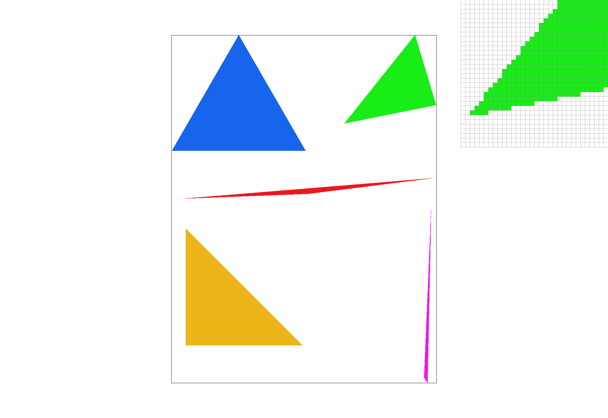
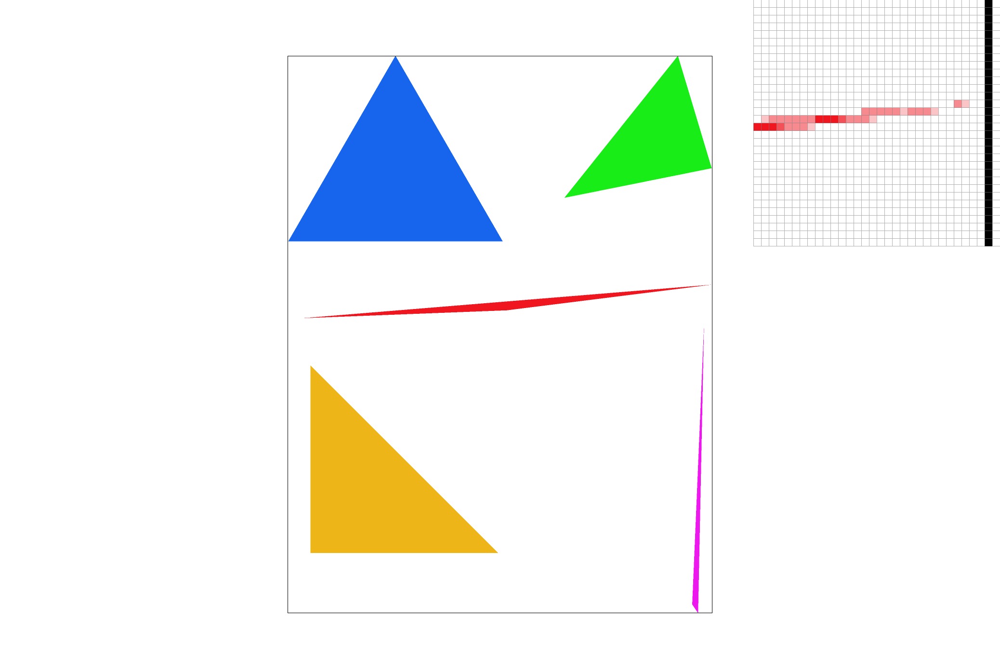
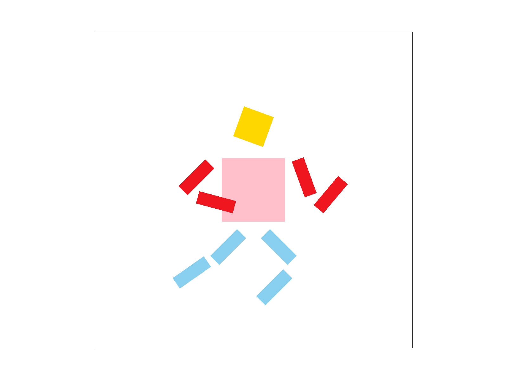
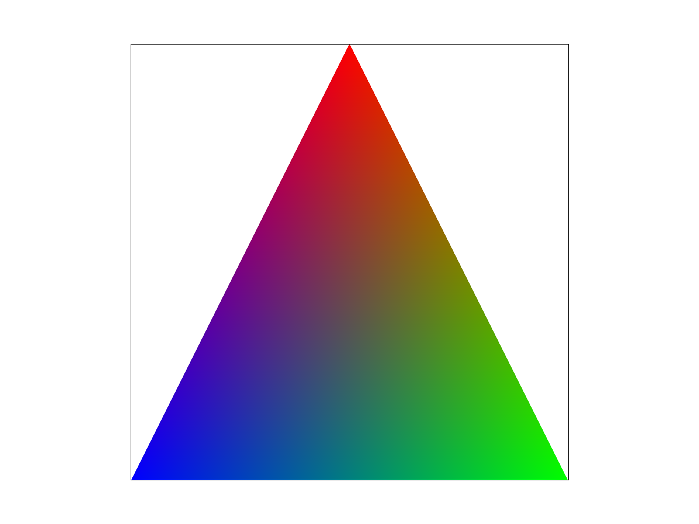
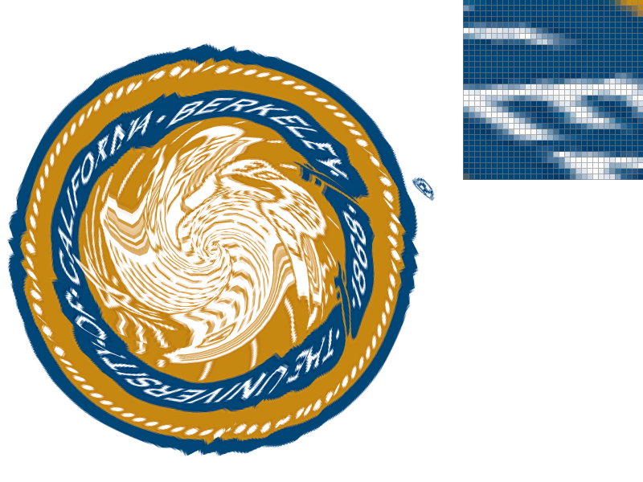
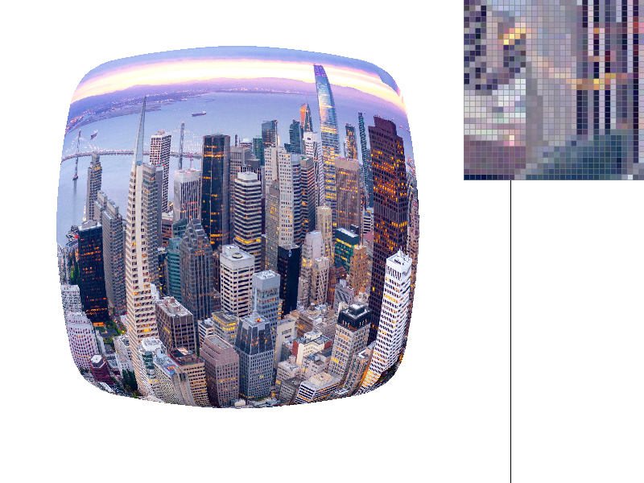
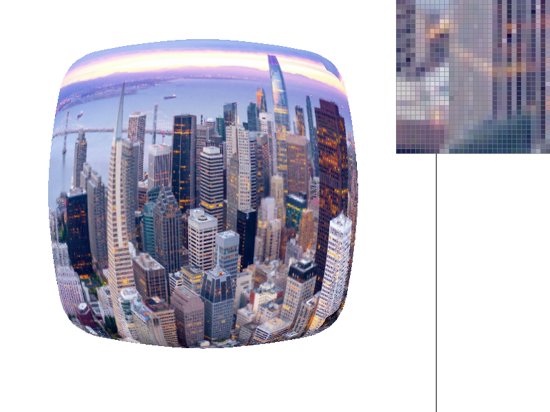

Overview
In this project, we first build a simple rasterizer that can render triangles. We then extend the functionality by implementing antialiasing by supersampling, computing hierarchical transforms and Barycentric coordinates. Finally, we implement texture mapping, with antialiasing techniques including bilinear interpolation and mipmap with trilinear interpolation.
Putting together, our renderer can take in a simplified version of Scalable Vector Graphics (SVG) file and render it in a display window. We can use the mouse to translate the rendering on the screen as well as zoom in and zoom out; we can also use the keyboard to toggle different rendering settings, including the supersampling rate, the texture filtering methods on mipmap levels, and the texture filtering methods on pixels.
We have learned a lot of intersting things from completing the project. First, we see how a rendering pipeline is implemented, and how the different methods and formulas we learned in lectures translate into different functions and bells and whistles that can be toggled on and off. We also notice the different effects of antialiasing methods for different images, and the trade offs between computation and image quality. Last but not least, we see how floating point precision issues can easily bring in artifacts, and how an inefficient implementation can easily slow down rendering.
Section I: Rasterization
Part 1: Rasterizing single-color triangles
We first implement a function for rasterizing a single-color triangle. The basic idea is to iterate over each pixel in the triangle's bounding box, and check whether the pixel is inside the triangle. If it is, we set the color of the pixel to the triangle's color.
In particular, the algorithm is as follows:
- Determine the bounding box of the triangle by finding the minimum and maximum x and y coordinates of the vertices.
-
Iterate over each pixel (x, y) within the bounding box. Peform a point-in-triangle test to determine whether the coordinate (x+0.5, y+0.5) is inside the triangle. To do this, we can use the following formula:
$$ {P=(x+0.5,y+0.5), \quad P_0=(x_0,y_0), P_1=(x_1,y_1), P_2=(x_2,y_2)} $$
$$ {\vec{V_i}=P-P_i, \quad \vec{T_0}=P_1-P_0, \vec{T_1}=P_2-P_1, \vec{T_2}=P_0-P_2} $$
$$ {\vec{N_i}=\bot(\vec{T_i})=\text{Rot}(90)(\vec{T_i})=(-(y_{i+1}-y_i),x_{i+1}-x_i)} $$
$$ {L_i=\vec{V_i} \cdot \vec{N_i}=-(x+0.5-x_i)(y_{i+1}-y_i)+(y+0.5-y_i)(x_{i+1}-x_i) \geq 0 \text{ if } P \text{ is on the same side of } \vec{N_i}.}$$
$$ If {L_0, L_1, L_2 \geq 0 \text{ or } L_0, L_1, L_2 \leq 0 \text{, then } P \text{ is inside the triangle.}} $$
Since the normal vector $\vec{N_i}$ is computed by rotating $\vec{T_i}$ in the counterclockwise direction, if the triangle is labeled in a counterclockwise order, then the point is inside the triangle if and only if $L_0, L_1, L_2 \geq 0$. If the triangle is labeled in a clockwise order, then the point is inside the triangle if and only if $L_0, L_1, L_2 \leq 0$.
Finally, if the point is inside the triangle, set the color of the pixel to the triangle's color.
From the above logic, we can see that our algorithm is no worse than one that checks each sample within the bounding box of the triangle because we compute the bounding box first and only iterate over pixels in that bounding box.
Here is a screenshot of the rendered basic/test4.svg with the default viewing parameters, showing different triangles. We can clear see jaggies:
|

|
Extra Credit
We implement two main optimizations which boost the speed of triangle rasterization. In the first, more naive implementation, the order of the loops was not taken into account for cache performance, and there were redundant calculations within the loop that, while correct, were unnecessarily repeated calculations.
To address these two issues, firstly the iteration over x-y in the for loops was modified to have the outer loop be iterating over y and the inner loop over x. The cache access pattern is better in this case, as the stride within the inner loop in this setup is 1, while the stride in the inner loop in the worse configuration is width.
Having a lower stride means more closely together sequential accesses, which are more likely to already be in the cache, and therefore would reduce memory read times. The second optimization is a straight forward one that just moves certain computations above the for loops. To evaluate our optimizations compared to the baseline,
we measure the nanoseconds of the execution of the RasterizerImp::rasterize_triangle function and the execution of the Drawrend::redraw function across 5 different images with varying sizes and numbers of triangles. In particular, for the RasterizerImp::rasterize_triangle calls, the duration was averaged over the number of triangles per image, while the millisecond durations for
Drawrend::redraw were only from one call.
| Image Name | Unoptimized rasterize_triangle Execution Time (ns) | Optimized rasterize_triangle Execution Time (ns) | rasterize_triangle Speedup | Unoptimized redraw Execution Time (ms) | Optimized redraw Execution Time (ms) | redraw Speedup |
|---|---|---|---|---|---|---|
| basic/test3 | 8095.16 | 4615.03 | 1.75 | 15 | 11 | 1.36 |
| basic/test5 | 443317 | 261783 | 1.69 | 2 | 1 | 2 |
| basic/test6 | 13432.3 | 9018.55 | 1.49 | 1 | 1 | 1 |
| illustration/02_hexes | 21906.9 | 12911.2 | 1.70 | 2 | 1 | 2 |
| illustration/04_suns | 27667.8 | 15563.2 | 1.78 | 9 | 5 | 1.8 |
Part 2: Antialiasing triangles
Here, we extend our rasterize_triangle function to incorporate supersampling. The basic idea is to divide each pixel into smaller sub-pixels, and then compute the color of the pixel by averaging the colors of the samples. We implement this by first rasterizing an image that is of higher resolution, store it in the sample_buffer, and then downsampling the higher resolution image to the output resolution of the framebuffer.
Supersampling is useful for antialiasing as it is equivalent to a 1 pixel-width box filter that attenuates frequencies whose period is less than or equal to 1 pixel-width. Instead of coloring a pixel whose center is inside the triangle the triangle color and not coloring it at all when the pixel center is outside the triangle, we color it an intermeidate value proportional to the area of the triangle inside the pixel. As such, supersampling can reduce jaggies and other visual artifacts such as moiré patterns caused by the limited resolution of the image.
For our implementation, we sample at sqrt(sample_rate) * sqrt(sample_rate) grid locations distributed over each pixel area, and store all the higher resolution samples in the sample_buffer, which is a std::vector of Color values, similar to Task 1. But instead of storing width * height values, we now have width * height * sample_rate values, as each pixel now has sample_rate samples. We implemented the orders of elements in sample_buffer such that the sample_rate subpixels are contiguous, making it easier to access when downsampling. During downsampling (i.e., in resolve_to_framebuffer), we iterate through the pixels in the framebuffer and average the colors of the sample_rate samples stored contiguously in sample_buffer.
In particular, the RasterizerImp::rasterize_triangle algorithm is as follows:
- Determine the bounding box of the triangle by finding the minimum and maximum x and y coordinates of the vertices.
-
Iterate over each pixel $(x, y)$ within the bounding box. If the pixel center $(x+0.5, y+0.5)$ is outside the triangle, skip it.
-
For each pixel, iterate over each subpixel $(x', y')$ within the pixel, where $(x', y') = (x + \frac{i+0.5}{\sqrt{\text{sample_rate}}}, y + \frac{j+0.5}{\sqrt{\text{sample_rate}}})$ and $i$ and $j$ both range from 0 to $\sqrt{\text{sample_rate}}-1$.
-
Check whether the subpixel center is inside the triangle. If yes, store the color of the subpixel in the
sample_buffer.
-
Check whether the subpixel center is inside the triangle. If yes, store the color of the subpixel in the
-
For each pixel, iterate over each subpixel $(x', y')$ within the pixel, where $(x', y') = (x + \frac{i+0.5}{\sqrt{\text{sample_rate}}}, y + \frac{j+0.5}{\sqrt{\text{sample_rate}}})$ and $i$ and $j$ both range from 0 to $\sqrt{\text{sample_rate}}-1$.
The main modifications we make to the rasterization pipeline from Task 1 is that 1) we increase the length of the sample_buffer by a factor of sample_rate and fill in sample_rate colors in the vector as we iterate through the pixels, and 2) we add two inner for loops to iterate through the subpixels (horizontally and vertically) and perform a point-in-triangle test for each subpixel center instead of for each pixel.
The RasterizerImp::resolve_to_framebuffer algorithm now looks like follows:
-
Iterate over each pixel of the frame buffer.
-
For each pixel, extract the
sample_ratesamples from thesample_bufferand average them to get the final color of the pixel.
-
For each pixel, extract the
The main modification is to the sample_rate samples and perform averaging instead of taking only 1 sample from the sample_buffer.
Below, we show png screenshots of basic/test4.svg with the default viewing parameters and sample rates 1, 4, and 16 to compare them side-by-side. The pixel inspector is positioned over the top right corner of the red triangle.

|

|

|
From the comparison, we can see that the default sample rate of 1 produces significant jaggies along the edges of the triangle. Increasing the sample rate to 4 or 16 reduces the jaggies. This antialiasing effect is expected because supersampling is equivalent to a 1 pixel-width box low-pass filter, which blurs the edges of the triangle. The more samples we take, the smoother the edges of the triangle become. In places such as a skinny triangle, the edges pass through many pixels partially, and so filling the pixels with intermediate values creates a smoother transition.
Part 3: Transforms
In this part, we implement some basic 2D transform functions in transforms.cpp to apply 2D transformations to the vertices of a triangle. We implement the 2D transformations with the following formula:
- Translation: $ {\begin{bmatrix}1 & 0 & d_x \\0 & 1 & d_y\\0 & 0 & 1\end{bmatrix}} $
- Rotation: $ {\begin{bmatrix}\cos\theta & -\sin\theta & 0 \\\sin\theta & \cos\theta & 0\\0 & 0 & 1\end{bmatrix}} $
- Scaling: $ {\begin{bmatrix}s_x & 0 & 0 \\0 & s_y & 0\\0 & 0 & 1\end{bmatrix}} $
We modified svg/transforms/robot.svg and created a cubeman running. Below, we show the rendering of the original svg and the modified svg side by side. In particular, we changed the colors of the head, torso, and legs of the cubeman. We also rotated the head, the arms, and the legs to make them consistent with a running motion.

|

|
Section II: Sampling
Part 4: Barycentric coordinates
In this part, we implement the rasterize_interpolated_color_triangle function, which uses Barycentric interpolation to draw triangles with non-uniform colors.
Barycentric coordinates are a way to represent the coordinates of a point within a triangle as a convex combination of the triangle's vertices' coordinates. Specifically, in 2D, the barycentric coordinates of a point within a nondegenerate triangle $ABC$ are defined as the weights $(\alpha, \beta, \gamma)$, with $\alpha + \beta + \gamma = 1$ such that $\vec{P} = \alpha \vec{A} + \beta \vec{B} + \gamma \vec{C}$. The barycentric coordinates of a point can be thought of as the relative distances between the point and each vertex. For example, a point that is closer to the green vertex will have a larger weight for the green vertex in its barycentric coordinates.
Barycentric coordinates are useful because they provide a coordinate system of points relative to the triangle frame that is invariant to rigid transform of the triangle, and can be used to smoothly (linearly) interpolate values within the triangle from the triangle's vertices. This is useful in rendering colors and textures.
To illustrate this concept, let's consider the following triangle:
|

|
The vertices of this triangle are colored red, green, and blue. Any point within this triangle can be represented as a linear combination of the vertices, where the coefficients of the linear combination are the barycentric coordinates of the point. For each pixel inside the triangle, we can compute its barycentric coordinates, and then use those coordinates to compute the color of the pixel as a weighted sum of the vertex colors. The result is a smoothly blended color triangle.
Below, we show a png screenshot of svg/basic/test7.svg with default viewing parameters and sample rate 1. We can see the barycentric interpolation results in smooth color gradients.

svg/basic/test7.svg. |
Part 5: "Pixel sampling" for texture mapping
Pixel sampling refers to determining the color of a pixel on the screen by sampling the colors from the texture map. In texture mapping, a 2D image called a texture is applied to a triangle or a 3D model in general to give it the appearance of surface details and patterns. For triangle elements, each vertex is associated with a position in the texture image. To determine the color of the patch on the surface corresponding to a pixel on the screen, we need to sample and/or interpolate the colors from the corresponding pixels on the texture.
In this part, we implement two main methods of pixel sampling: nearest-neighbor and bilinear filtering. Nearest-neighbor sampling simply chooses the color of the texel closest to the center of the pixel being rendered. This method is simple and fast, but it can result in a blocky or pixelated appearance. In particular, when magnified, we see jaggies, and when minified, we may see moiré patterns.
In bilinear sampling, the color of the pixel on the texture is interpolated based on the four nearest pixels to the point being sampled. This method produces a smoother and visually pleasing result than nearest neighbor sampling, albeit at the cost of being more computationally expensive than nearest neighbor sampling.
Both nearest and bilinear pixel sampling require finding the four nearest points for a given sample location. Let the desired sample coordinate at a specific mipmap level be $(x_0, y_0)$. The four closest points to the input point can be accomplished by taking the floor and ceiling of $(x_0, y_0)$, yielding $x_1$, $x_2$, $y_1$, and $y_2$ in the coordinates of a mipmap level. For nearest pixel sampling, out of the four nearest points, the one with the closest X and closest Y is taken. The color at that location in the mipmap is returned. We use the linear interpolation formula $a + t (b-a)$, where a and b are values in some interval, and t is a scaling factor between 0 and 1 inclusive that determines where along that interval the desired value lies. In our implementation, bilinear sampling is implemented by interpolating the color value between $(x_1, y_1)$ and $(x_2, y_1)$ and between $(x_1, y_2)$ and $(x_2, y_2)$ using linear interpolation with $x_2 - x_0$ as the scaling factor. The two resulting colors are then linearly interpolated, but using $y_2 - y_0$ as the scaling factor. Each color is interpolated by interpolating the individual components, with the R, G, B values as the inputs to the linear interpolation formula, and t as the scaling factor..

|

|

|

|
In this particular example of the UC Berkeley seal, the border surrounding the various letters with nearest pixel sampling results in a very blocky, rough look. When increasing the sampling rate to 16, the issue is reduced, but there are still some artifacts that don't have a smooth border. Bilinear sampling has smooth borders already at a sampling rate of 1, and there is not a significant difference when increasing the sampling rate to 16. There will be a large difference between the methods really at steep edges, as nearest pixel sampling may be tricked into going full onto one side or the other, but bilinear sampling will be able to take the neighbors into account, smoothing out the transition in the edge. This can be exacerbated when the sampled coordinate is half way or close to half way between two pixels, as the bilinear interpolation will end up averaging the pixel, but the nearest pixel will jump quite far.
Part 6: "Level sampling" with mipmaps for texture mapping
Level sampling is a technique used in texture mapping to improve performance and reduce memory usage while still maintaining a high-quality image using a mipmap. A mipmap is created by repeatedly reducing the size of the texture by half until the texture is a single pixel. When rendering a texture mapped object, the appropriate level of the mipmap is chosen based on the size of the texture on the screen, and the pixel sampling method is applied to that level. When sampling a point on the surface, we choose the appropriate mipmap level based on the size of the texture on the screen. To determine what mipmap level to sample from, we determine $\frac{du}{dx}, \frac{dv}{dx}, \frac{dv}{dx}, \frac{dv}{dy}$, where (u,v) are in texture coordinates and x,y are in screen coordinates. To calculate those derivatives, we first get the (u, v) coordinates from coordinates of (x, y), (x + 1, y), (x, y + 1) using Barycentric interpolation. It is possible that (x + 1, y) and (x, y + 1) are outside of a triangle, so we make sure to test the new points. If they are outside the triangle, the original (x, y) is used. The resulting coordinates in texture space can then be subtracted and scaled by width - 1 in the case of a derivative with respect to x or height - 1 in the case of a derivative with respect to y. To find the sampling level from these derivatives, we use the formula $D = \log_2(\max(\sqrt{(\frac{du}{dx})^2 + (\frac{du}{dx})^2}, \sqrt{(\frac{dv}{dx})^2 + (\frac{dv}{dx})^2}))$, where D is the desired mipmap level. D can be rounded to nearest valid integer for nearest level sampling, and for trilinear filtering, D can be treated as a continuous result and by interpolating between the two levels that are around D. We also perform clamping on the levels returned to make sure that level is greater than or equal to 0 and lower than the maximum number mipmap level.
The following analysis assumes that only one of the methods is used at a given time. Let W be the width of the image, H be the height of the image, and S be the sample rate. The space complexity of super sampling is $O(WHS)$ in our method, as we need to store a high resolution buffer which contains S values for each pixel in the buffer.
Since super sampling involves computing S samples for each of the WH pixels, the time complexity is $O(WHS)$ also (downsampling involves visiting $O(WHS)$ elements). Super sampling can have profound antialiasing results in certain cases, such as extra sharp corners or missing pixels, but to get there,
the computation is high, especially when considering two other antialiasing methods. The space complexity of pixel sampling is $O(WH)$, since it is possible to have the rasterization cover the entire area of the screen, and for each pixel, the computation involves a constant amount of memory. The time complexity of
pixel sampling is also $O(WH)$, as for each pixel, there is a constant amount of work done in the interpolation process. Bilinear sampling can be effective at smoothing certain aliased regions, but it doesn't perform as well as supersampling in certain cases, such as
basic/test4.svg as shown in Part 2. The pink triangle with bilinear interpolation wouldn't have the entire object as one piece. The space complexity of level sampling is still $O(WH)$, because the additional memory overhead required to store the entire mipmap is approximately $\frac{1}{3}WH$. The time complexity
of level sampling is $O(WH)$ in total, as for each pixel, there is a constant time set of operations performed. In practice, it does involve more computation per pixel than pixel sampling, as there is a level calculation, and potentially another round of interpolation. There doesn't seem to be as much difference when using level sampling compared to the other two methods,
but in certain cases, such as smaller patches farther in the background, the different mipmap levels can have an impact.
Overall, pixel sampling is the fastest and uses the least memory, but can contain blocky artifacts. Level sampling is slower than pixel sampling but faster than supersampling, but uses more memory to store the mipmaps. Level sampling provides antialiasing power by selecting the appropriate mipmap level for the texture size, but can also make certain aspects of the image too blurry. Supersampling requires much more memory, but can provide strong antialiasing in certain cases.
|

|

|

|

|